Attente réglementaire et énergétique
Avant de considérer que la technologie développée puisse concurrencer ou remplacer des technologies fonctionnant par bâchées, deux aspects importants doivent être traités : les aspects réglementaires (hygiénisation) et les aspects énergétiques (consommation de vapeur).
4.1 Vérification du temps de séjour hydraulique
4.1.1 Contexte réglementaire — Certification Class A (US EPA)
Les performances d'hygiénisation sont l'un des éléments clefs des technologies d'hydrolyse thermique. La réglementation américaine de l'US EPA (Environmental Protection Agency) définit la certification de plus haut niveau d'hygiénisation : la Class A. Cette certification requiert :
- Une température de traitement d'au moins 165 °C,
- Un temps de séjour minimum de 20 minutes pour chaque particule de boue traversant le procédé,
- Un abattement des éléments pathogènes démontré.
Dans le cas d'un procédé continu, contrairement aux procédés par bâchées où le temps de séjour est le temps du cycle, il est indispensable de démontrer que la plus rapide des particules a bien séjourné au moins 20 minutes dans le réacteur.
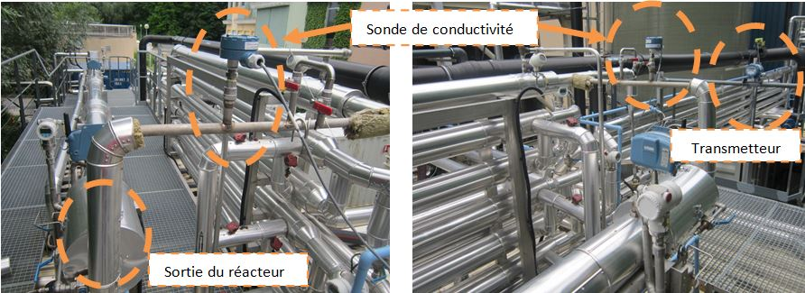
4.1.2 Méthode de traçage hydraulique
Le traçage hydraulique consiste à injecter un traceur de concentration connue à l'entrée du réacteur et à suivre l'évolution de sa concentration en sortie. Le traceur retenu est le chlorure de sodium (NaCl), dont la concentration peut être mesurée par conductivité in situ.
La fonction de Distribution du Temps de Séjour E(t) est définie par :
avec C(t) la concentration du traceur mesurée en sortie du réacteur à chaque instant t.
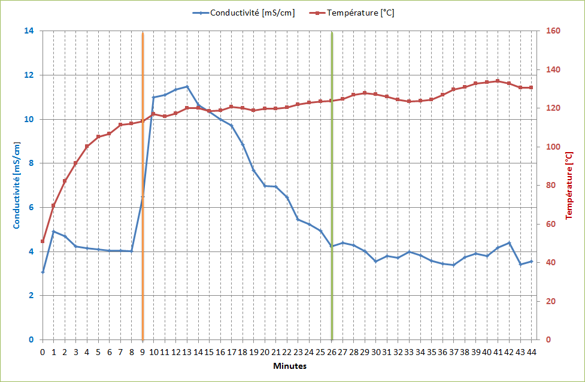
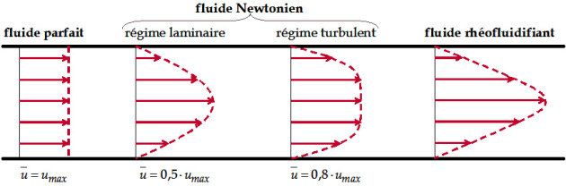
4.1.3 Résultats du traçage
Tests en eau : Les résultats montrent que l'écoulement de l'eau ne correspond pas à un flux piston (comme initialement supposé lors du dimensionnement), mais s'apparente à un écoulement laminaire avec un profil de vitesse parabolique.
| Masse NaCl [g] | Temps de rétention mini [min] | Temps au pic [min] | Temps passage total [min] |
|---|---|---|---|
| 150 | 9 | 2 | 21 |
| 300 | 12 | 3 | 24 |
Le calcul du profil de vitesse pour le réacteur pilote (DN 100, longueur 10 m, débit 90 l/h) donne :
- Vitesse moyenne V ≈ 0,0032 m/s
- Vitesse maximale Vmax = 2V ≈ 0,0064 m/s (écoulement laminaire newtonien)
- Temps minimal théorique ≈ 26 minutes
Tests en boue : Avec la boue, le ratio Vmax/V moyen mesuré est de l'ordre de 1,8, soit un profil intermédiaire entre le flux piston (ratio = 1) et l'écoulement laminaire newtonien (ratio = 2). Ceci s'explique par le comportement tribologique de la boue pâteuse (légère viscoplasticité) qui évolue vers un comportement rhéofluidisant une fois chauffée.
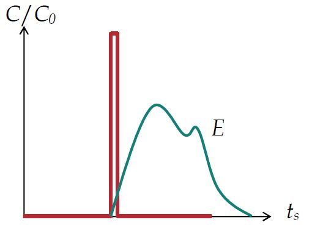
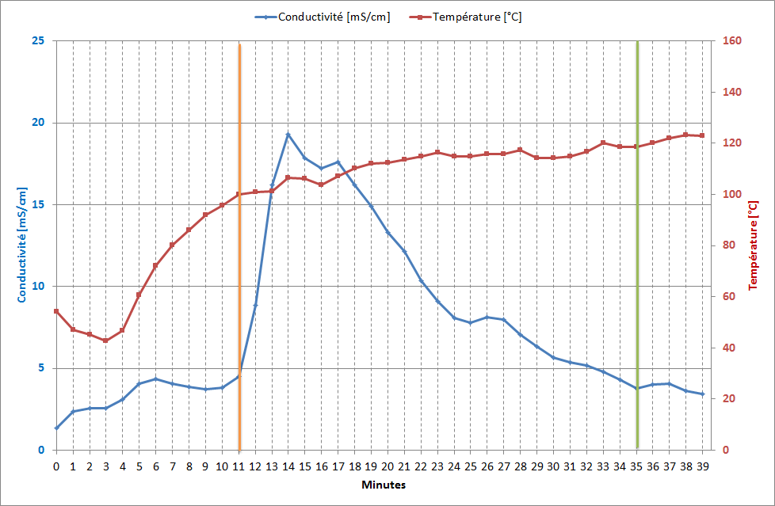
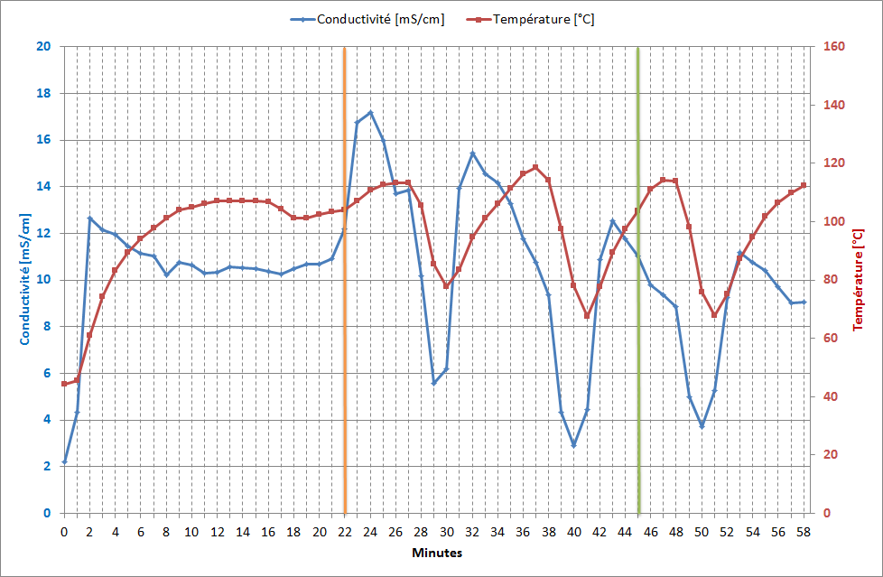
4.2 Abattement des éléments pathogènes
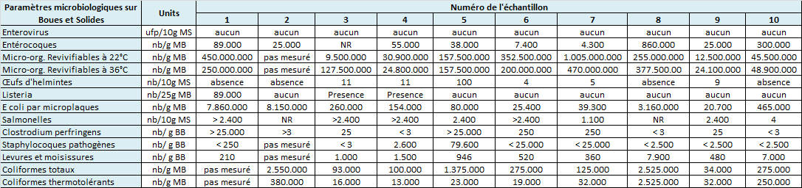
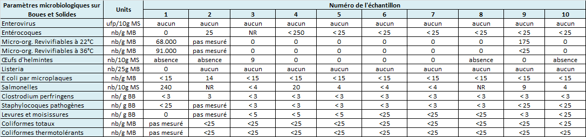
4.2.1 Méthodes d'analyse
Les éléments pathogènes analysés et les méthodes employées sont résumés dans le tableau suivant :
| Élément pathogène | Méthode | Unité |
|---|---|---|
| Coliformes totaux | Filtration sur membrane | n/g MB |
| Coliformes thermo tolérants | Filtration sur membrane | n/g MB |
| Entérovirus | Norme XP T 90 451 | Ufp/10 g MS |
| Œufs d'helminthes | FD X33 040 méthode B | n/10 g MS |
| Listeria | NF V 08 055 | n/25 g MB |
| E. coli | XP X33 019 | n/g MB |
| Salmonelles | XP X33 018 | n/10 g MS |
| Clostridium perfringens | Semi-quantitative milieu liquide | n/g BB |
| Staphylocoques | Filtration sur membrane | n/g MB |
| Moisissures | Ensemencement milieu solide | n/g BB |
4.2.2 Résultats — Performances d'hygiénisation
Après un traitement à 165 °C pendant au moins 20 minutes, tous les éléments pathogènes sont détruits avec des abattements pouvant atteindre 7 log.
4.3 Récupération d'énergie — Échangeur boue/boue
4.3.1 Contexte énergétique
L'hydrolyse thermique consomme de la vapeur vive produite à partir du biogaz. Dans le contexte des appels d'offres internationaux, il est demandé aux procédés de consommer le moins de vapeur possible. La consommation de vapeur d'un procédé continu sans récupération d'énergie est pénalisante par rapport aux procédés par bâchées qui récupèrent la vapeur de revaporisation (flash).
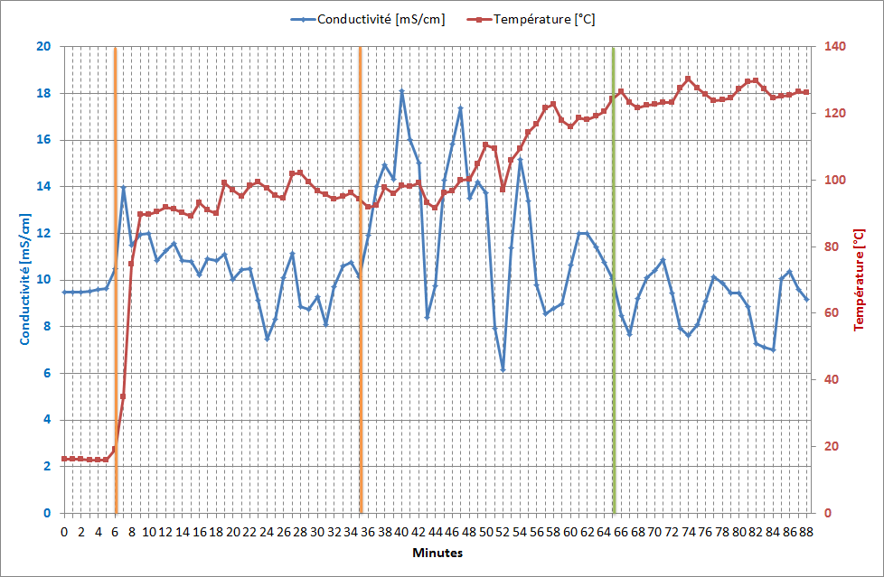
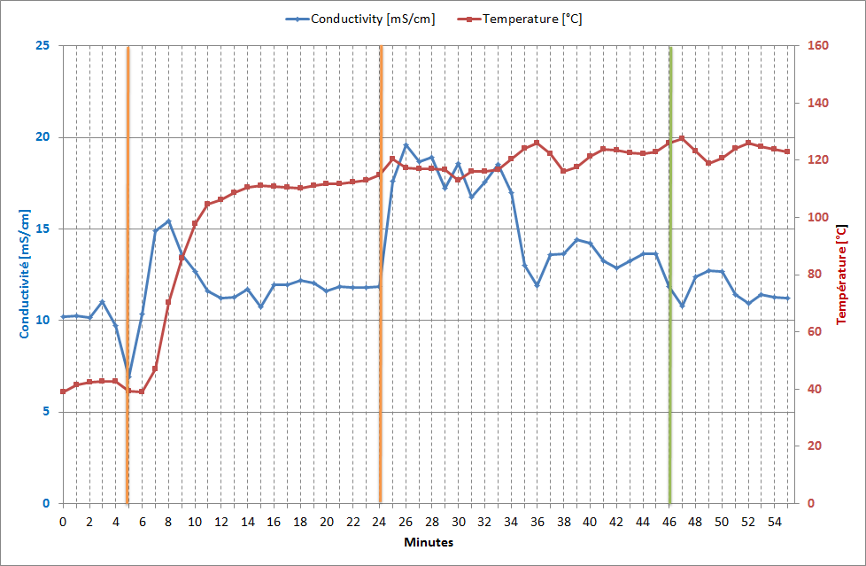
4.3.2 Échangeur boue/boue testé
Un système d'échangeur thermique boue/boue a été conçu et testé. Côté calande : boue hydrolysée chaude (~160 °C en entrée). Côté tubes : boue froide déshydratée à préchauffer. Les performances mesurées :
- Chute de pression : 1 bar (conditions nominales)
- Gain de température sur les boues entrantes : +60 °C
- Aucun problème majeur d'encrassement détecté en conditions pilotes
4.3.3 Bilan énergétique comparatif
| Configuration | Siccité boue | Consommation vapeur |
|---|---|---|
| LD sans échangeur | ~16 % | ~1,5 t vapeur / t MS |
| LD avec échangeur boue/boue | ~16 % | ~0,9 t vapeur / t MS |
| DLD avec échangeur boue/boue | 23–28 % | ~0,5 t vapeur / t MS |
| Procédés batch concurrents (avec flash) | ~16 % | ~0,8–1,0 t vapeur / t MS |
4.3.4 Proposition : chaudière de récupération
Une alternative technique consiste à utiliser une chaudière de récupération (Waste Heat Boiler) pour générer de la vapeur basse pression en récupérant l'énergie des boues hydrolysées. Ce schéma permettrait de :
- Préchauffer les boues entrantes via un mélangeur dynamique basse pression (3 bar),
- Réduire la consommation de vapeur vive principale,
- Rendre la consommation d'énergie indépendante de la siccité des boues.
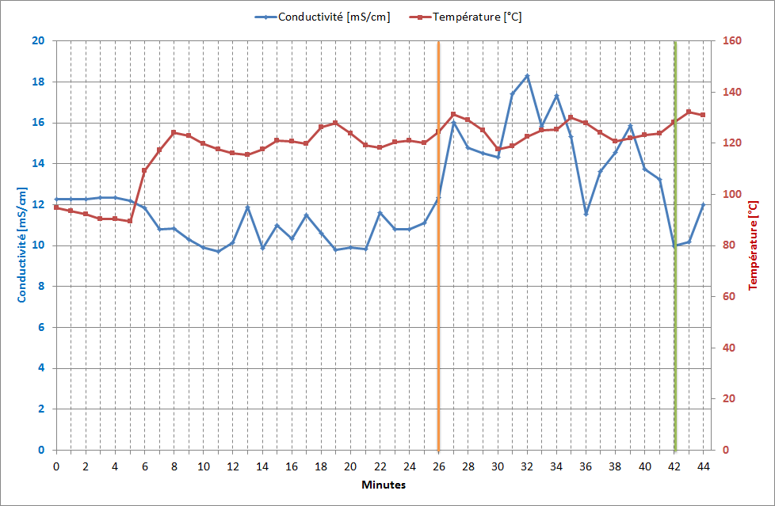
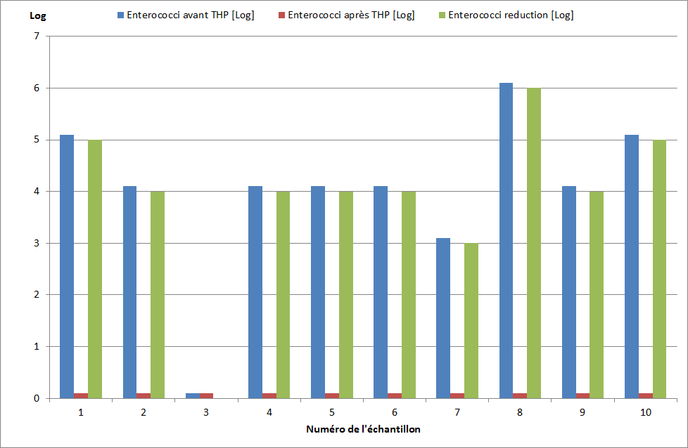
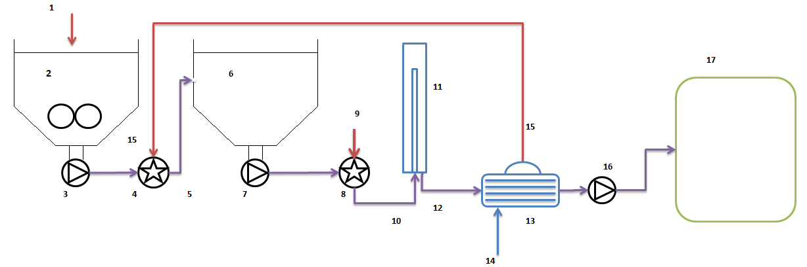
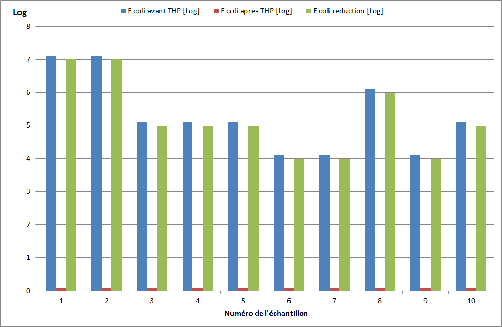
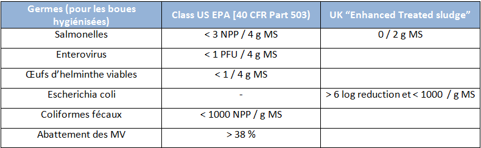
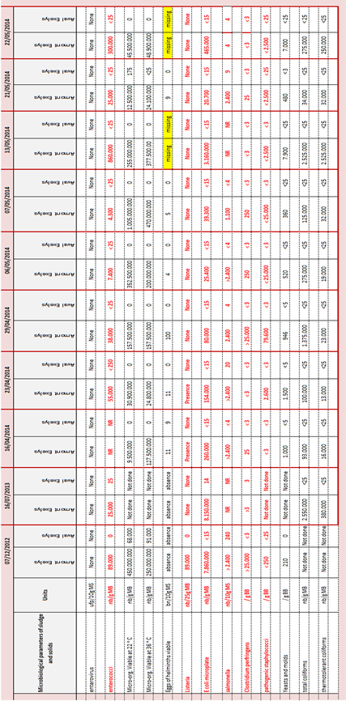
Conclusions du chapitre 4
Concernant la Class A
Les éléments pathogènes sont totalement détruits avec des performances pouvant atteindre 7 log. Le temps de séjour est d'au moins 20 minutes comme requis par la réglementation. L'homogénéité des températures, le temps de séjour respecté et l'abattement des éléments pathogènes confirment la conformité à la Class A de l'US EPA.
Concernant l'échangeur
L'échangeur boue/boue a fonctionné sans problème majeur. La configuration DLD couplée à cet échangeur permet de déshydrater les boues à 23–28 % de siccité, ce qui est comparatif ou supérieur aux procédés batch du marché. La consommation de vapeur passe de 0,9 à 0,5 t/t MS par rapport à une configuration LD classique.